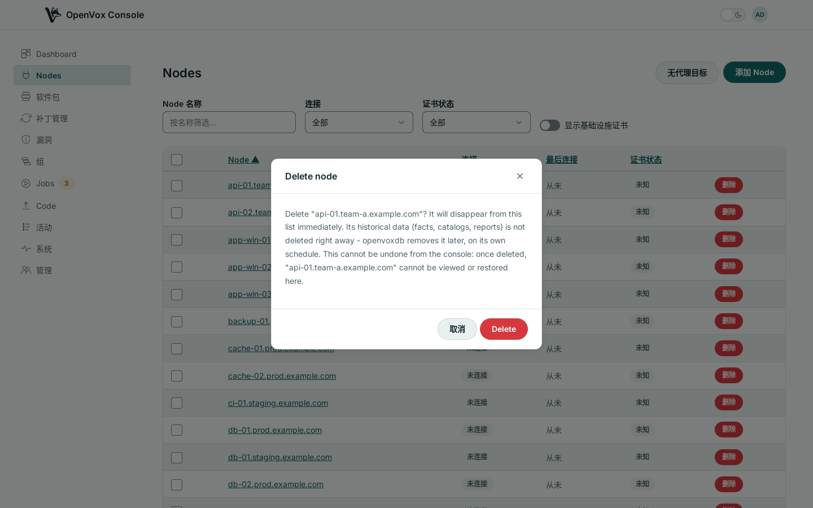

Nodes
移除 Node
从控制台删除 Node、此操作在 openvoxdb 和 CA 中的作用，以及会保留哪些内容。
删除 Node
在 Nodes 页面上，对该 Node 选择删除并确认。这需要 nodes:manage 权限，并且该权限所在角色的 Node 组需包含该 Node。


删除操作会同时做两件事：
- 它会在 openvoxdb 中停用该 Node，使其不再出现在机群中；
- 它会从 CA 中清理该 Node 的证书，与清理操作相同，因此该 certname 再也无法通过认证，并且可以重新注册。
要让该 Node 从页面上消失，两部分都必须完成，因为该页面同时列出 openvoxdb 已知的 Nodes 和 CA 已知的 Nodes。如果控制台没有证书管理员凭据，就只会完成 openvoxdb 那一部分，该 Node 可能会因其证书而继续出现。
在删除一台要退役的机器之前，请先停止或卸载它的 Node 代理和 Puppet 代理，以免它再次上报或连接。
删除不会做的事
- 它不会立即清除该 Node 的历史。它的 Facts、catalog 和 Reports 会保留在 openvoxdb 中，直到 openvoxdb 自己的垃圾回收按其自身的计划将其删除。
- 没有已删除 Nodes 的列表。openvoxdb 会在所有列表中略去已停用的 Nodes，而控制台也不保留单独的记录，因此已删除的 Node 会从控制台的页面中消失。
恢复 Node
已删除 Node 的证书已被清理，因此恢复它与添加一个新 Node 完全相同：在其上再次运行安装脚本，并为其新请求签名。参见添加 Nodes。